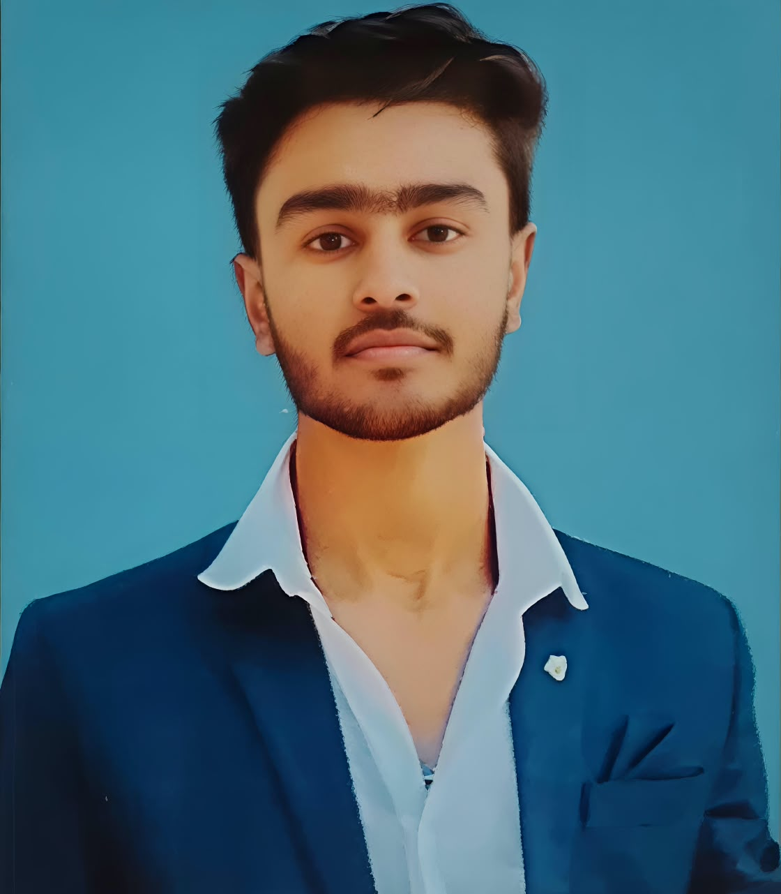

"Arush Raj Sankrit"
Good Morning Everyone!
My name is Arush Raj Sankrit
B.Tech CSE(AI & ML) Student
Lovely Professional University
My name is Arush Raj Sankrit. I am a B.Tech first-year Computer Science Engineering student specializing in Artificial Intelligence and Machine Learning. I enjoy learning new technologies and developing my programming skills. I am currently focusing on Python and web development.I'm now completing my B.Tech degree in Lovely Professional University.
My hometown is in Hazaribagh, Jharkhand and now i'm in Phagwara, Punjab to complete my College and i miss my family alot, i miss my home alot, i miss my colony alot, i miss my friends alot, i miss my old school alot , i miss my hometown alot. Atually my hometown is very beautiful. In the radius of only 10 km there were 6-7 mountains , 4-5 waterfalls, and several lakes, rivers, jheel .
I am a B.Tech first-year Computer Science Engineering student specializing in Artificial Intelligence and Machine Learning.I cleared my 10th and 12th in Hazaribagh only. My school name was DAV PUBLIC SCHOOL and it's a CBSE facilated school. I'm studying from LKG in that school and after my 10th board in 2024 i choose PCM as my study on that school and i completed my 12th in 2026.
Technical Skills
Soft Skills